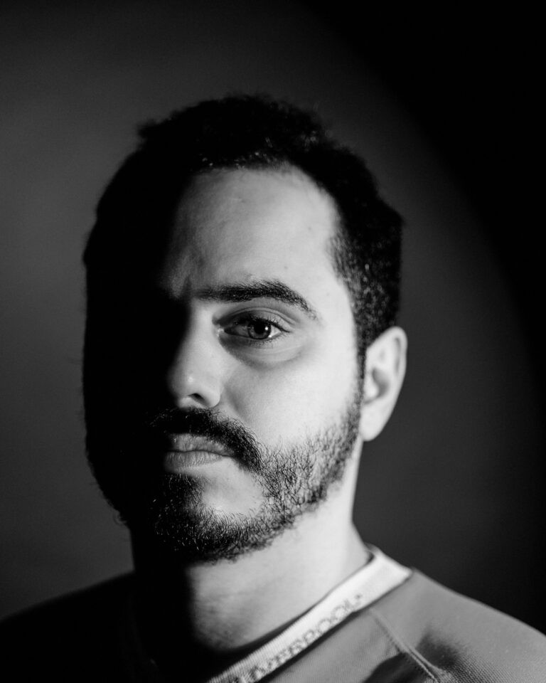

Bruno Rodrigues Martins

Bruno Rodrigues Martins (Guimarães, 1993) é um artista audiovisual sediado em Portugal que trabalha com vídeo, luz e instalação. A sua prática desenvolve-se através de performances ao vivo e ambientes sensoriais que constroem os seus próprios espaços narrativos. A sua pesquisa move-se em duas linhas que se cruzam: um interesse documental por territórios, comunidades e formas alternativas de estar; e uma investigação mais experimental sobre o espaço, o tempo e o encontro entre o seu trabalho e o público.
Apresentou o seu trabalho em exposições individuais e coletivas em Portugal e no estrangeiro, incluindo na Sahng-Up Gallery (Seul), Espronceda (Barcelona), Videoformes e Nuit de l'Image Européenne (Clermont-Ferrand), gnration e Zet Gallery (Braga), Plato (Porto), Córtex Frontal (Arraiolos) ou Time is the New Space (Roterdão), bem como no espaço público da cidade de Braga. Em 2025, criou a componente de vídeo de Quimera, a performance de abertura da Braga25, Capital Portuguesa da Cultura, apresentada no Theatro Circo.
Artes visuais, instalação · Braga